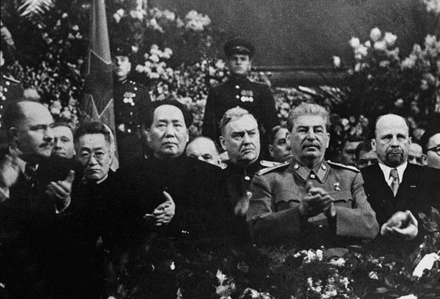
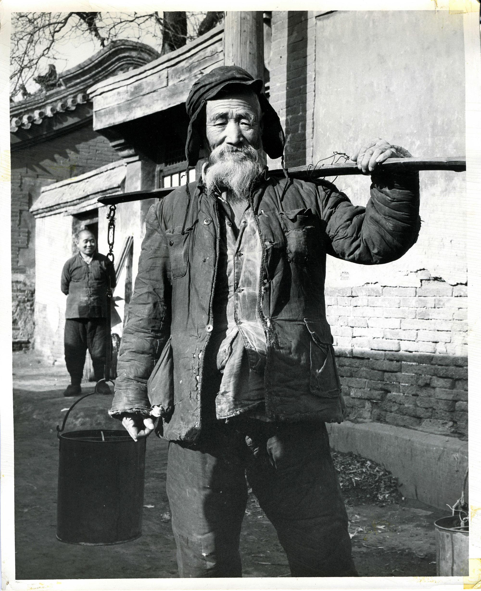
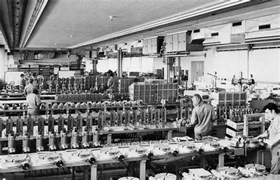
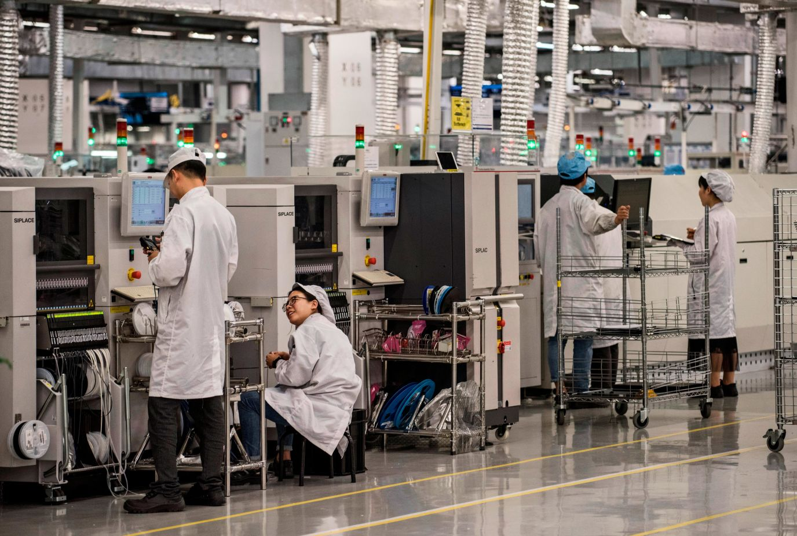

O Começo
1º Guerra Sino...
A Guerra Civil
Um Recomeço
Ascensão e Glória
A Ruina de Mao
Gato De Deng
Ressurge Mao...
Rev. Cultural
De Volta...
Um Recomeço...
Praça Sem Paz
O Fruto de Deng
PCCh: Como o partido comunista chines chegou ao poder e como foi sua evolução com o passar dos anos.
Como a China saiu de um pais miseravel, para virar a segunda potencia mundial, tendo um governo socialista e uma economia capitalista.
Resumo
Um dos países mais influente atualmente, a China carrega com si uma história vasta, várias polemicas, e políticas que geram não só questionamentos, mas intrigas entre grupos que defende que essas atitudes são certas ou erradas. Algo que nos últimos anos, com a globalização vem sendo cada vez mais acessado e alcançado pelas pessoas.
O Começo
No começo do século XIX, a Companhia das Índias Orientais inglesa tinha o monopólio do comércio do chá da China. Comprado em Cantão, o produto era revendido na Inglaterra pelo dobro do preço. Em oitenta anos, esse negócio saltou de 12 mil toneladas anuais, em 1800, para quase 90 mil toneladas na década de 1880.
O intercâmbio anglo-chinês, porém, era muito desigual. Os chineses não tinham interesse nos produtos ocidentais, que costumavam ver com estranhamento e, por vezes, com curiosidade. Eram grandes consumidores, entretanto, de ópio, droga produzida na Índia e vendida pela Companhia das Indias Orientais inglesa desde o século XVIII. Tratava-se de um comércio lucrativo e ilegal: o consumo tinha sido proibido pelo governo chinês desde 1800. Mesmo ilegal, o ópio era utilizado por setores da elite, inclusive altos governantes. Em 1839, medidas enérgicas foram tomadas pelo imperador chinês para pôr fim ao tráfico do ópio, com o confisco do produto e a intimação para os ingleses acabarem com o negócio. Começava um conflito ficou conhecido como a Primeira Guerra do Ópio (1839-1842).
O resultado foi péssimo para a China, obrigada a assinar o Tratado de Nanquim (1842), pelo qual cedia a ilha de Hong Kong aos ingleses e abria cinco portos ao comércio estrangeiro, incluindo o de Cantão. Nesses portos, a Inglaterra instalou missões diplomáticas e legalizou o comércio do ópio. Dois anos depois, os mesmos direitos foram concedidos à França e aos Estados Unidos. Outros países europeus e missões religiosas ocidentais também foram beneficiados.
Um pequeno incidente reacendeu o conflito: a captura pelos chineses de uma embarcação comandada por ingleses. Começava a Segunda Guerra do Ópio (1858). A Inglaterra ocupou Cantão e tomou com facilidade a cidade de Tientsin. A China teve de assinar o Tratado de Tientsin, que legalizava o consumo do ópio em seu território e permitia o trânsito de comerciantes por mais onze portos chineses
No ano seguinte, os chineses se recusaram a confirmar o tratado. Ingleses e franceses, então, ocuparam Pequim (Beijing) e incendiaram o Palácio de Verão, onde residia o imperador. A rendição do governo chinês foi ainda mais humilhante: teve de assinar um novo tratado em que se comprometia a cumprir todas as cláusulas do acordo anterior; a pagar indenizações ao governo inglês pelas perdas econômicas de seus comerciantes; e a ceder à França a posse da Indochina, que era controlada pelos chineses. Estava garantido aos europeus, assim, o livre acesso ao mercado chinês.

1º Guerra Sino-Japonesa
O Japão também se lançou nessa conquista, começando pela península da Coreia, então ligada à China. O objetivo era se apossar das minas de ferro e carvão ali existentes. Em agosto de 1894, a marinha chinesa bombardeou barcos japoneses, dando início à Guerra Sino-Japonesa. O Japão, com frota e exército mais poderosos, tomou Formosa, hoje Taiwan, que se tornou domínio japonês. O conflito, vencido pelo Japão em 1895, rendeu ao país vários territórios e postos comerciais. A expansão japonesa foi vista com desconfiança pelas potências europeias. A Rússia, por exemplo, cobiçava a Coreia e a Manchúria. Nesse caso, era um colonialismo tradicional, sobretudo preocupado com a conquista territorial e as rendas do Estado.
A entrada intensa de estrangeiros provocou várias mudanças na China. Com a Reforma dos Cem Dias, em 1898, inspirada nas medidas aplicadas pelo governo japonês (Revolução Meiji), o governo de Pequim (Beijing) reorganizou as regras de comércio, a agricultura e a administração, tanto militar quanto civil. Internamente, essas mudanças modernizantes receberam forte resistência. Apoiada pelos conservadores, a rainha-mãe Tusis assumiu o trono, aprisionou o imperador, seu filho, e anulou vários de seus decretos, voltando-se contra os estrangeiros. Aliou-se a várias sociedades secretas, entre elas a I Ho Tuan ou I Ho Or'uan (Punhos da Justiça), chamada pelos ocidentais de Boxers (boxeadores).
A sociedade tinha como lema "Proteger o país e destruir o estrangeiro". Em 1900, inspirada nesse ideal, a rainha declarou ao Grande Conselho que os estrangeiros deveriam ser expulsos ou eliminados. A população, atendendo à conclamação, matou vários missionários europeus, assassinou o ministro da Alemanha e impediu a entrada de missões diplomáticas e tropas estrangeiras a China foi novamente invadida por uma coligação de exércitos europeus, com apoio de um numeroso contingente japonês. Era a Guerra dos Boxers, que terminou com a derrota chinesa.

A Guerra Civil
Em 1911, representantes de várias províncias derrubaram a monarquia e implantaram a república. Com ela, surgiu o Partido Nacional do Povo, o Kuomintang. Em defesa do nacionalismo, da democracia e do bem-estar da população, empresários, latifundiários do sul e funcionários do Estado se organizaram nesse partido. Em 1921, foi fundado o Partido Comunista Chinês (PCC). As duas agremiações, embora rivais, lutaram juntas pela manutenção da república e contra os grandes proprietários de terras do norte do país. Até que, em 1927, Chiang Kai-Chek assumiu a liderança do Kuomintang e passou a perseguir o PCC. Refugiados nas zonas rurais, os comunistas descobriram um forte movimento camponês e o incorporaram à luta revolucionária. Um dos dirigentes comunistas, Mao Tsé-Tung, passou a atuar diretamente na organização dos camponeses. Como consequência, o PCC passou a dispor de 30 mil homens armados.
Para eliminar as bases comunistas, Chiang Kai-Chek lançou uma grande ofensiva militar. Mao Tsé-Tung, então, liderou a retirada das tropas comunistas entre 1934 e 1935. Cerca de 100 mil homens percorreram quase 10 mil quilômetros. O episódio ficou conhecido como Grande Marcha. Em 1931, quando o Japão invadiu a China, a luta pela defesa do país motivou a união dos dois adversários políticos: Kuomintang e PCC. Essa aliança se estendeu de 1937 ao término da Segunda Guerra Mundial, em 1945.

Os comunistas alcançaram grande popularidade entre camponeses e operários. Ao final da guerra, em 1945, o PCC dispunha de uma força militar importante e dominava várias regiões da China. O Exército Popular de Libertação, força militar dos comunistas, enfrentou e derrotou as tropas do Kuomintang. Chiang Kai-Chek refugiou-se na ilha de Fomosa (atual Taiwan). Em 19 de outubro de 1949, o PCC tomou o poder e proclamou a República Popular da China, enquanto a ilha de Formosa passou a abrigar a República da China.
Como todo comunista Mao mantinha seu governo concentrado dentro de um estado único, como qualquer bom governador comunista mantinha suas principais ações voltadas aos trabalhadores rurais (camponeses), os trabalhadores urbanos (operários) e os militares.
Um Recomeço
Infelizmente apesar de promoter mudanças, elas não foram imediatas, a china ainda era um país arcaico, possuía nenhuma tecnologia e poucas ferramentas, o País mal tinha estradas, ruas pavimentadas e fabricas, a miséria dominava todo o país, os camponeses que compunham 94% da população lavravam a terra com fermentas movidas a bois e manualmente, algo ultrapassado para a época. Eles eram explorados, reduzidos a papeis de subordinados e não tinham direitos, então Mao prometeu terras.
Essas promessas de terras, felizmente, foram compridas, apesar de uma forma cruel, Mao incentivou o povo a pegar os donos de terras e fazer a “justiça” com as próprias mãos, no caso matar e torturar eles, segundo Mao se deve usar das próprias mãos para fazer parte da ordem revolucionária, logo as terras conquistadas foram repartidas igualmente, e cada família recebeu uma parte seguindo a vigília de um representante local do partido. Logo longes das câmeras surge um importante nome, Deng Xiaoping.

Deng Xiaoping, melhor amigo de Mao Tsé-tung, durante a guerra foi um dos principais nomes da revolução e durante o início do comunismo no país, ele era o responsável por organizar as terras e os representantes de cada região.
Com esse feito de Mao, ele conquistou a confiança e o amor dos camponeses, e o partido fez diversas propagandas para exaltar isso, a mais famosa delas, uma que dizia que os comunistas são as sementes e o povo é o solo, e que a função deles é se unir ao povo e criar raízes e florescer. Em pouco tempo 19 Milhões de militantes se encontravam no país, todos estavam do mesmo lado.
Ascensão e Glória
Mao não estava satisfeito, queria promover suas ideias, então para isso ele fechou o país. A China nas últimas décadas, havia sofrido muita invasão e ocupação de outros países que os exploravam, algo que desmembrou o país. A vida desses chineses caiu na Mao dos estrangeiros, a ideias vindas do ocidente eram como pragas, então Mao expulsou os estrangeiros, fechou o país e impediu qualquer influência externa.
Para os estrangeiros isso foi um absurdo, então logo declararão que aquele era um governo ilegítimo, e que o verdadeiro governo era o de Taiwan. A partir desse momento Taiwan começou a representar a China na ONU. Mao então buscou outros aliados, pois era difícil para a China ser autossuficiente. Então Mao deixou seu país natal por 2 longos meses em busca de aliados, então encontrou aliados, os soviéticos.
Mas como todo governo aquilo foi um jogo de interesses, Mao não confiava em Joseph Stalin, pois ele não apoiou Mao na guerra civil, da mesma forma Stalin também não confiava em Mao, além da aliança, mais para uma subordinação, tinha ferido o orgulho de Mao ele estava decidido a transformar a China por conta própria. Logo vários soviéticos desceram a Pequim (Beijing), capital da china, para adiantar os planos, ou seja, melhorar a China. O plano era centralizar na indústria pesada, sem fabricas gigantescas. Os setores escolhidos, foram aço, metal e mineração. A China estava se modernizando. As terras já distribuídas foram então alvo de prosperidade também, equipamentos antigos foram trocados por máquinas, e agricultura familiar então acabou. Todo alimento garantido, ia para uma cooperativa estatal. Quase 400 Milhões de camponeses viraram funcionários do estado. E Mao que nasceu camponês, virou chefe deles, a economia chinesa estava sendo transformada.

Logo Deng viu que o país estava melhorando, que Mao não era um charlatão. Deng então com muito esforço foi subindo de cargo político, até que assumiu o comitê geral, ele estava envolvido nas grandes decisões.
A educação na China havia sido um privilégio durante vários anos no país, apenas a nobreza tinha direito a essa virtude, a maior parte da população era analfabeta, o que impactava na tomada de decisões apenas pelos nobres. Então para isso Mao investiu na educação, e como ele havia dito, uma grande potência deve ter um povo instruído e toda juventude foi parar na escola. Grande então foi a evolução do país o analfabetismo teve seu menor índice em anos.
Mao então feliz com as conquistas e se achando o maioral, proclamou que até 2001 a china iria se tornar uma grande potência socialista industrializada. Então em pouco tempo ele alcançou seu ápice de poder, todos o idolatravam. Para todos, sua palavra era a lei.
Entretanto por traz de um governo aparentemente bom escondia-se fatos terríveis, a China estava vivendo o império do terror qualquer opositor real ou imagina era levado para o campo de concentração, onde sofria trabalho escravo e sofria lavagem cerebral, para perder qualquer vontade de se opor, sobre o reinado de Mao pelo menos 50 Milhões foram para os campos de concentração.

A Ruína de Mao
Em 1957 um caso diferente aconteceu, pardais foram acusados de comer a plantação, Mao para acabar com os pássaros disse ao seu povo, façam eles voarem tanto até cair. E o povo obedeceu, infelizmente Mao se esqueceu de um detalhe, sem predadores os insetos se multiplicam e proliferam, nos anos seguintes as colheitas foram devastadas. O PCCh não se importou em filmar a chacina dos pássaros, diferentemente da chacina cometida contra os opositores de Mao, principalmente durante as 5 campanhas homicidas realizadas entre os anos de 1950 e 1960, devido ao Movimento das cem flores, onde o governo deu certa liberdade a críticas, porém diante delas Mao se enfureceu e promoveu as campanhas e repreendeu os críticos.
Deng Xiaoping, envolvido com a máquina do poder, se tornou uma engrenagem dedicada, no dia 4 de abril de 1957, Mao ficou chocado com o primeiro satélite que entrou em orbita terrestre, uma conquista tecnológica dos quais os soviéticos, estavam muito orgulhosos, algo que virou comemoração no festival de outubro na União Soviética, entretanto Mao estava presente nessa festa, o sucessor de Stalin reservou um lugar de honra para Mao ao seu lado, Deng também estava presente.
Vendo que os soviéticos estavam muito avançados, e que a China era vítima de chacota dos Soviéticos por ser “dependente” do Governo de Moscou. Mao tomou uma decisão arriscada de superar em todos os aspectos os vermelhos, ele estava prestes a promover o Grande Salto. Mao disse sua decisão para Deng, porém Deng tinha suas dúvidas em relação a ideia, devido ao país ter acabado de sair de uma situação rural e provavelmente não ser capaz de bater a Rússia, apesar disso, sendo teimoso, Mao deu início aí seu plano. No segundo trimestre de 1958, então Mao lança sua campanha, sem precedentes, a fim de realizar seu sonho ambicioso. Quase do dia para noite o povo foi militarizado, os camponeses foram designados a brigadas de trabalho agrupadas por comunas, eles trabalhavam em um ritmo frenético, sempre motivados a seguir em frente pelo bem do partido. Cada comuna era responsável por cada um dos membros, dos nascimentos a morte, refeições em família eram proibidas, eles tinham que comer todas as refeições dentro da cantina querendo ou não. Mao queria produzir em 5 anos o dobro de aço que o Reino Unido produzia, o líder pediu que todos entregassem seus itens de metal.
Para derreter o ferro Mao mandou que usassem de todas a fornalhas da aldeia, e mandou construir outras também, então em toda China surgiram fornos de fundição de metal improvisados. Os membros do partido perseguição o povo para que a meta fosse alcançada.
Os campos então, foram deixados de lado, não plantaram nenhuma semente, e todo trabalho, foi em vão, os metais eram de péssima qualidade, de tal forma que ficaram praticamente inutilizáveis. O povo então corria perigo de passar fome, não havia colheita, junto com isso engenheiros soviéticos saíram do país. Acarretando no fracasso do plano. Então os líderes ficaram preocupados com uma possível revolta do povo. Então, o ministro da defesa, Peng Dehuai se revoltou, e avisou que dias de trevas estavam por vir, Mao que não aceitava críticas, ficou furioso, então Mao disse – Antes Comunista que especialista –, O comitê em choque então o apoiou, Deng, que não estava presente na reunião, ficou desapontado, porém não se opôs a Mao para não ter futuros problemas.
Porém como previsto, a colheita de 1959 foi um desastre, pelos 2 anos seguintes o país já enfraquecido e desorganizado sofreu com as interpéries, no verão de 1961 a fome juntos com a miséria reinava, então após isolar entre 15 a 35 milhões de chineses, a censura à imprensa foi adotada, levou cerca de 20 anos para a verdade vir ao público, então no começo de 1960 a China estava basicamente à beira da morte, todo poder e glória esperada sumirão, Mao tinha fracassado, o líder era falho, Mao intimidado por seu colegas resolveu admitir seus erros pela primeira e última vez.
O Gato De Deng
Então Mao se retirou do poder, e seu substituto foi Liu Shaoqi, homem menos previsível que Mao, segundo o partido e seu próprio braço direito Deng Xiaoping, Mao então fingiu concordar com a decisão. Porém todos sabiam que foi uma decisão falsa, Mao ainda detinha o poder, a presidência do partido comunista, Deng então se manteu cauteloso, pois sabia que aquele não era o fim.

Então era Liu e Deng que recebiam líderes estrangeiros, e juntos lutaram para sanar as feridas do país, o grande salto foi esquecido durante 3 anos os Chineses puderam tomar folego, Deng permitiu que o povo pudesse cultivar suas próprias terras e as colheitas então prosperaram, ele também deu a permissão a feiras a céu aberto, e os suprimentos aumentaram. A vida cotidiana recuperou o tempo de lazer, os chineses até nos domingos podiam fazer passeios com a família. E lotaram as livrarias pois eles podiam ler.
Deng era um homem pragmático, uma vez ele declarou:
– Não importa se o gato é branco ou preto, desde que consiga matar ratos –
em outras palavras ele diz que se a economia funciona o modelo de crescimento é bom, logo, ele preferia ser especialista a comunista.
Ressurge Mao E Sua Guarda
Enquanto isso Mao não havia desistido da vida política, pelo contrário, ele estava viajando todo país em seu trem particular, nas cidades que conseguiram escapar do grande salto, a popularidade dele entre os jovens ainda estava intacta, ao entregar o governo ao Liu e Deng suas palavras se tornaram sagradas, depois do desastre do grande salto Mao parou de prometer poder aos chineses por algum tempo. Surgiu nele um outro plano, ele queria que Beijing substituísse Moscou no coração de todos os revolucionários do mundo. Então no dia 16 de julho de 1966, Mao entrou em cena novamente, por mais de 2 horas ele não no rio Yang-Tsé junto com vários jovens, tudo aquilo nada mais era que uma mensagem para a juventude, ele estava pedindo para que voltasse a luta contra aqueles que perderam seus ideais, a grande revolução proletária havia começado.
Sem questionar, milhões de crianças e adolescentes se inscreveram em uma nova organização, a guarda vermelha, Mao a transformaria em uma máquina de destruição em massa. Ele proveu as multidões encantadas um pequeno livro vermelho, que continha uma pequena coletânea de suas melhores frases. O pequeno livro vermelho se tornou a pequena bíblia da guarda vermelha. Cautelosamente, ele definiu um alvo, o PCCh, com o intuito de acabar com os traidores que queriam implantar ideias capitalistas. Mao dizia – Vamos desmascará-los – mesmo sem as especificações de nomes todos sabiam que eram os alvos. Então a fanática guarda vermelha obedeceu, os líderes tanto pequenos quanto grandes ficaram à mercê deles, e foram presos, maltratados, espancados, torturados e humilhados em estados lotados por membros da guarda vermelha. Além disso qualquer objeto que remetia ao mundo capitalista ocidental foi destruindo sendo eles obras de artes, templos religiosos e qualquer objeto que veio de fora do país.

Então os 2 líderes mais importantes acabaram caindo, Liu e Deng, então respectivamente um foi morto e o outro foi exilado, onde passou a concertar tratores. Nos famosos anúncios contra os líderes, os gatos da famosa frase de Deng apareceram com os rostos dos líderes, prestes a serem mortos por um guarda vermelho.

Revolução Cultural
A volta de Mao, então foi marcada por muita agitação e caos, uma vez que os chineses estavam muito entusiasmados com a volta do líder, então imagens de Mao foram tiradas e publicadas no mundo inteiro transformarão ele em um líder da cultura pop

Quando uma impressa francesa foi entrevistar os jovens Chineses eles diziam que confiavam e acreditavam muito no partido e no presidente, para eles Mao nunca estava errado.
7 anos mais tarde a revolução cultural terminava, a Doutrina Ortodoxa Maoísta havia se transformou na norma e comandava a vida dos chineses, os pensamentos de Mao eram oniscientes, todos tinha as mesmas ideias, devido ao livro vermelho. Os poucos turistas que entravam na China eram simpatizantes com as ideias de Mao e diziam que enfim as promessas comunistas foram cumpridas, classes em total igualdade financeira e direitos iguais independentemente do gênero são uma realidade. Para eles a China era um sinônimo de revolução.
Mas por traz de todo a realidade da China era um caos completo, devido a abolição quase completa dos membros do PCCh o país não tinha administradores, que levavam o país a rumo do sucesso, os líderes escolhidos por mal eram os mais incompetentes, as fabricas funcionavam lentamente e a produção era mínima, acima de tudo a China estava emburrecendo, as universidades estavam fechadas a mais de 3 anos. Os milhões de estudantes que compunham a guarda vermelha foram despachados por todo o país, após devolverem Mao ao trono eles se tornaram perigosos de mais, Mao sempre desconfiou dos intelectuais, por isso se livrou deles.
Nas fronteiras mais desertas da China, as pessoas viviam miséria, fome e trabalho com altas cargas horarias. Nas cidades as pessoas se tornaram apáticas, a esperança da gloria que lutaram tanto para conseguir, se diminuía com o tempo. Cercada por uma muralha a China estava estagnada, a repressão estava pior do que nunca, durante a revolução cultural 100 Milhões de chineses foram perseguidos e cerca de 3 Milhões morreram. Mas por mais que tentassem o país estava parado.
Um Recomeço Deslumbrante
Deng aguardava um impulso para dar ao país, como o partido ainda precisavam de Deng, seus antigos inimigos apoiaram a sua volta ao governo, e em 1977 Deng reconstruiu o partido e retornou todos os políticos que foram banidos após a revolução cultural, com o apoio deles Deng reforçou os esforços. Ao fim de 1978 as coisas estavam engatando, a China enfim abriu as fronteiras e deixou de ser um país fechado e então uma brisa de liberdade chegou ao país, a China estava relaxando, aos poucos produtos chegavam e os jovens enfim podiam se expressar.
E para virar uma potência Deng rejeitou a ideia que ela deveria trabalhar sozinha e abraçou alegremente as mudanças, Deng então foi visitar os EUA onde apresentou a China como um país com mais de 1 Bilhão de habitantes, com baixo custo que estão dispostos a aprender novas técnicas e tem sede de consumo de produtos capitalistas. E os EUA estavam muito interessados.
A aprendizagem da China começou em 1979, o país não tinha experiencia nos negócios, por isso Deng permitiu que as primeiras empresas de economia mista, fossem inauguradas, onde os chines aprenderam como que funciona o comercio internacional.
10 anos depois a China de Deng tinha ultrapassado a de Mao, em 1989 o retrato de Mao ainda estava na Praça da Paz Celestial, mas não impressionavam jovens que estavam fazendo protestos em prol da democracia. A imprensa estrangeira estava fazendo a festa. Pela primeira vez desde 1949 os chineses puderam protestar, os opositores ao regime puderam se expressar. Preço que Deng deveria pagar pela abertura ocorrida. Dentro de uma década a china havia se transformado, ao passo da Praça da Paz Celestial a economia estava em seu maior índice.
Então a China comunista tinha ficado rica, a classe média não parava de crescer, e produtos fabricados na China estavam conquistando o mundo. A China estava gradativamente virando a oficina do mundo, aos poucos o êxodo rural estava acontecendo, já que os fazendeiros queriam ir para a cidade em busca de uma vida melhor aos seus filhos. A sociedade tradicional chinesa estava de saída, o PCCh também estava mudando, muitos estavam trocando a gola mandarim por um terno.
Praça Sem A Paz Celestial
Infelizmente por traz das grandes mudanças Deng enfurecido mandou tanques aniquilarem os protestantes na Praça da Paz Celestial, foi um completo massacre, milhares morreram, os protestos então pacíficos foram respondidos por tanques e tiros.

Mesmo que olhares ruins para China decorridos de crimes cometidos por Deng ele não tinha vergonha deles, mesmo tendo aberto a China ele não queria tirar seu partido do poder e esse paradoxo seria o seu legado, Deng Xiaoping morreu em 1997, mas foi através de seu legado que a China cresceu e para além do que ele esperava, ao abrir o país Deng permitiu que indústrias fossem ao país.
O Fruto de Deng
Atualmente a China em 6 horas exporta o mesmo volume que exportou no ano inteiro de 1978, atualmente é o epicentro de tecnologias de ponta, na história nenhum país cresceu tanto em um período tão rápido, e os próprios chineses lucraram com isso, os prazeres e vícios em uma sociedade de consumo não são mais um mistério para eles.
A China atualmente é um país autossuficiente, não depende mais de tecnologia de outros países, sendo a segunda maior economia, a China, provavelmente nos próximos anos irá ocupar a primeira posição do Rank de países mais influentes. Não só se tornou modelo a ser seguido em questão de educação, tecnologia e economia, é também modelo de estratégia, pois ela conseguiu fazer sua moeda crescer e ser usado em transações, podendo em poucos anos superar a moeda américa, Dólar, vendo a crescente da moeda chinesa e o decrescimento do Dólar devido às más decisões tomadas pelo governo de Washigton.
A China enquanto vira uma das maiores economia do mundo, a imagem de Mao continua estampada na células da moeda chinesa, o seu retrato ainda domina a praça da paz celestial, mas o lideres raramente tocam no nome dele, a expressão economia social de mercado entrou na constituição, mas a China se tornou uma potência capitalista com muita influência, esse paradoxo se dá ao grande Deng Xiaoping, em resumo Mao prometeu transformar a China em uma das maiores potencias mas quem cumpriu a promessa foi Deng Xiaoping.
